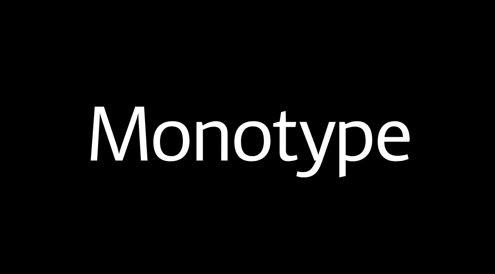

Monotype: Reduce and Reorganize
Over the years, Monotype’s online presence had grown to 20,000 pages,spread across more than 150 domains. iA drastically cut the number of domains and rebuilt Monotype’s corporate presence from scratch.